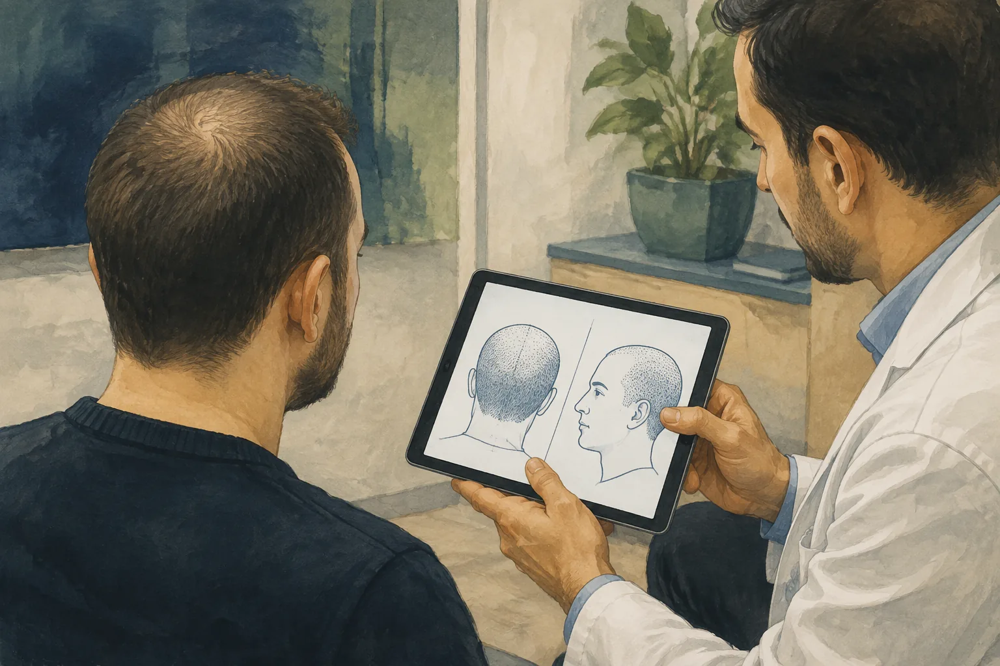

Could my hair transplant warrant legal review?
A review may be worthwhile if your donor area appears depleted, the agreed hairline or coverage was not delivered, you developed a significant injury, or the clinic has not explained who treated you. You can request an assessment before you have a complete medical file or know whether negligence occurred.
- Tell us what changed: the appearance of the donor or recipient area, your symptoms, and when the concern became apparent.
- Tell us what was promised: the hairline, number of grafts, named doctor, procedure, and aftercare included in your booking.
- Tell us what you have: photographs, messages, treatment records, payments, and any independent assessment.
If you have severe pain or unexpected symptoms, seek medical advice promptly. A legal enquiry cannot diagnose a complication or replace treatment. NHS guidance on problems after a hair transplant explains when to contact a clinician.
Describe your concern and request an assessment →What can support a hair transplant malpractice claim?
We compare what was agreed with what happened before, during, and after treatment. This applies whether your booking described the procedure as FUE, DHI, or FUT. A technique name alone does not establish how the operation was performed or whether the provider met its obligations.
A claim can raise questions about treatment planning, the work actually carried out, information and consent, the agreed cosmetic result, and the response to a complication. Records and independent expert reasoning are more useful than a general description such as “botched hair transplant.”
How we assess poor growth, donor damage, and scarring
Poor density or an unsatisfactory hairline
Keep the original hairline plan and photographs taken before treatment and during follow-up. A specialist can consider the stage of recovery, previous hair loss or transplants, and the result that was realistically achievable. The NHS notes that transplanted hair may shed before regrowing; early photographs alone do not prove graft failure.
Donor-area depletion or visible scarring
Photograph the back and sides as well as the transplanted area. An independent assessment can consider the extraction pattern, the condition before surgery, scar appearance, and the remaining options for repair. Avoid assuming that a particular graft number proves overharvesting.
Wounds, infection concerns, or persistent symptoms
Medical assessment comes first. Preserve the diagnosis, treatment records, photographs, and your requests for help. The legal review examines both the initial procedure and how the team responded when the problem was reported.
A report should explain its findings, possible causes, and limitations. Ask the specialist to distinguish observations from conclusions about the original treatment and to record any further examination needed.

What evidence should I collect?
Save original files and build a short timeline. Include the booking date, procedure date, follow-up visits, first symptoms, and any repair offer. Keep unedited photographs with their original dates where available.
| Record | Why it matters |
|---|---|
| Booking, invoice, and payment details | Identify the contracting company, payment recipient, package terms, named doctor, and services promised. |
| Hairline plan and graft estimate | Show the agreed design, treatment area, proposed number of grafts, and any changes discussed on the day. |
| Procedure and patient information forms | Record the technique, implanted roots, treatment areas, team members, and procedure photographs. |
| Consent and aftercare documents | Show what risks, alternatives, and recovery instructions were explained, in which language, and when. |
| Original photographs and messages | Document the donor and recipient areas over time, reported problems, and the clinic's response. |
| Independent reports and expenses | Support the diagnosis, proposed repair, treatment costs, necessary travel, and any documented loss of earnings. |
Article 10 of the Hair Transplant Units Regulation specifies procedure records including the technique, implanted root count and area, photographs, and team names. Patient Rights Regulation Article 16 provides for access to and a copy of health records personally or through an authorized representative.
What if I paid for more grafts than I received?
Keep the exact wording of the offer and the procedure record. Clarify whether a quoted figure referred to grafts, individual hairs, a target, or a guaranteed minimum. Sparse growth alone cannot establish how many grafts were implanted or prove deliberate deception. Any allegation of a shortfall should be assessed against the records and an expert opinion on what can reliably be reconstructed.
If the clinic refuses to answer, retain your written requests and any replies. Our guide to a clinic that stops responding after surgery explains what information to preserve.
What if a technician performed my hair transplant?
Record who performed each stage, what qualifications they claimed, and whether the doctor you booked was present. A team can include both doctors and other health professionals; the legal question depends on their roles, authorization, supervision, and the rules in force on your treatment date.
Under Article 9 as amended in November 2023 and September 2025, channel opening is reserved to the specified qualified doctors. Follicle collection and placement may also be performed by appropriately qualified health professionals working under the relevant doctor's supervision and responsibility. Transitional provisions extended the assistant-certification deadline to 31 December 2026 for the health professionals covered by those provisions.
The 2025 change must not simply be applied to an earlier procedure. We check the operation date, professional status, task performed, and any applicable transitional rule before drawing a conclusion about unauthorized practice.
Who could the claim be brought against?
Start with the legal names on the consent form, invoice, booking contract, and medical file. The clinic's trading name may differ from the company operating the service.
- The treating doctor: the work performed, professional care, information given, and any undertaking made directly to you.
- The clinic or hospital operator: the contractual arrangements, employment or service relationships, records, facilities, and aftercare responsibilities.
- An agency or intermediary: its own agreement, promises, payments, and role in arranging or supplying the treatment.
Liability is assessed separately for each party. The presence of a hospital logo or a booking agent does not automatically make every participant responsible. Code of Obligations Articles 49 and 112 address fault-based harm and failure to perform contractual obligations.
Which Turkish legal rules may apply?
For an elective cosmetic hair transplant, courts may assess the provider's undertaking under the contract-for-work provisions of Code of Obligations Articles 470–471. The published judgment below shows why the agreed result, consent, and complication management can matter alongside the technical performance of the procedure.
Private-treatment disputes may fall within consumer law. The Ministry of Trade's consumer-dispute guidance explains the available routes and mediation requirements. Your lawyer must identify the appropriate forum, applicable exceptions, and any steps required before filing. Public-provider claims can follow a different route.
Does a signed consent form prevent a claim?
A signature does not answer every question about information or care. Patient Rights Regulation Articles 15, 18, and 24 address information, understandable explanations, and consent. Keep the form and any evidence of translation, time to ask questions, changes to the plan, or a last-minute substitution of the advertised doctor. The adequacy of consent requires an assessment of the circumstances.
Case study: an open wound after a hair transplant
Yargıtay, 6th Civil Chamber
E. 2022/4360 · K. 2024/322 · 23 January 2024
What the patient alleged
The claimant alleged that a September 2017 hair transplant was followed by blackened skin and later removal of that tissue without adequate information or consent. The defendants disputed the allegations, including the claim that unqualified people had performed the operation.
What the court decided
The lower courts dismissed the claim after reports characterized the wound and scarring as a complication. Yargıtay set aside the appellate decision and quashed the dismissal. It required a further three-member specialist assessment of the agreed cosmetic result, performance of the undertaking, information about complications, and subsequent management, with examination of the claimant if needed.
Read the original judgment text on Yargıtay (Turkish). You can also locate it in Yargıtay's official decision search using the chamber, E. and K. references above. This is an English summary of a public ruling, not a claim that our firm represented the parties.
How can I pursue a claim from abroad?
You can begin the assessment from your home country. Code of Civil Procedure Articles 71–74 provide for representation through an authorized lawyer and distinguish powers requiring specific authority. A medical examination or other personal participation may still be necessary.
Initial case assessment
Share the treatment date, provider, main concern, and available records. We identify evidence gaps, possible defendants, and any urgent deadline questions.
Agree the work and fees
Discuss the proposed legal route, written fee terms, likely expenses, and power-of-attorney formalities before instructing us.
Obtain records and medical evidence
Organize the treatment file, photographs, independent findings, and documented losses. Further examination or translation may be needed.
Assess resolution and filing requirements
Consider the claim and any offer from the clinic. Complete mediation where it is required for the proposed proceedings.
Proceedings and expert review
If litigation is appropriate, present the evidence and legal arguments. The court may obtain expert reports; their reasoning and any gaps need careful review.
Settlement, judgment, and recovery
Review any settlement terms, appeal options, and enforcement steps. The value and practical recoverability of an award are separate questions.
The timeframe depends on the evidence, parties, experts, court workload, and any appeal or enforcement. Ask for an estimate based on your proposed route rather than relying on a fixed completion promise.
What compensation and repair costs may be considered?
Depending on the legal basis and evidence, a claim may concern reasonable corrective-treatment costs, other financial losses, a contractual refund, or non-pecuniary harm. Code of Obligations Articles 54 and 56 address financial loss following bodily injury and non-pecuniary damages. None of these amounts is automatic.
For repair treatment, obtain a reasoned specialist plan explaining the clinical need, available options, limitations, and estimated costs. Keep invoices and supporting records for expenses already incurred. A quote from a clinic in your home country can be evidence, but it does not guarantee that the full quoted amount will be recoverable.
Should I accept a free repair session?
Obtain independent medical advice about whether the proposed repair is suitable, especially if the donor area is a concern. Ask exactly who will perform it, which costs are included, and what happens if further treatment is needed. Have any settlement or release reviewed before signing; the legal effect depends on its terms.
What will legal representation cost?
The initial case assessment is free. Further legal work, medical opinions, document formalities, and proceedings can involve separate costs. Request a written explanation of the services included and how additional expenses will be approved.
| Cost | What to clarify |
|---|---|
| Lawyer's fees | Does the agreement cover records requests, negotiation, mediation, litigation, appeals, and enforcement? |
| Medical evidence | Who arranges and pays for an independent assessment, further examination, or expert report? |
| Documents and proceedings | What translation, authorization, notification, court, and enforcement expenses may arise? |
| Unsuccessful or partial claims | What costs might you be ordered to pay, and how does that affect the practical value of proceeding? |
Your own fee agreement and court-awarded costs are different matters. Code of Civil Procedure Articles 323 and 326 address litigation expenses and their allocation. Ask how those rules and any applicable exemptions affect your case.
Do I need to wait for the final result before seeking legal advice?
No. The timing of a medical assessment and the deadline for a legal claim are separate issues. Even when more healing time is needed to assess growth, you can preserve evidence, request records, and obtain advice on deadlines now.
There is no single limitation period that safely covers every dispute. The provider, legal classification, and relevant dates matter. The Code of Obligations includes different limitation provisions in Articles 72, 146–149, and 478. Do not assume that waiting for the clinic's reply or discussing a repair protects a deadline.
Why your international booking arrangements matter
A package can involve an overseas marketer, a Turkish agency, a medical team, and a separate health facility. Save the offer and messages identifying who supplied each part. Include any promises about doctor involvement, graft numbers, follow-up after your return, or a refund. These details help connect your complaint to the correct provider and undertaking.
Your next step: request a confidential case assessment
Send a short account of when and where the transplant took place, what concerns you, when it became apparent, and where you now live. Mention any previous transplant, independent report, repair proposal, or settlement offer, and list the records you have. A complete file is not required to make the first enquiry.
Understand your options after a hair transplant
We can explain what evidence is needed and discuss the possible legal route, deadlines, and costs.
Request a Free Case AssessmentLegal sources and review
Legally reviewed by Att. Başak Çavuşoğulları, Attorney at Law, Bursa Bar Association. Turkish legislation and the court ruling are linked directly below. NHS guidance is used only for the medical recovery context.
- Yargıtay 6th Civil Chamber, E. 2022/4360, K. 2024/322, 23 January 2024 — official judgment; especially the assessment and operative decision in sections V–VI.
- Hair Transplant Units Regulation, 6 May 2023, read with the 3 November 2023 amendment and 12 September 2025 amendment — staffing, procedure records, and transitional rules.
- Patient Rights Regulation — Articles 15–18 and 24 on information, records, and consent.
- Turkish Code of Obligations, Law No. 6098 — the contractual, liability, damages, and limitation provisions cited above.
- Ministry of Trade: consumer-dispute guidance — routes and mediation requirements.
- Code of Civil Procedure, Law No. 6100 — representation and litigation expenses.
- NHS: hair transplant — recovery, risks, and seeking medical advice.
The five illustrations are AI-generated explanatory artwork. They do not depict actual patients, attorneys, treatment results, or the parties in the court case.
General legal information
The appropriate claim, deadlines, costs, and potential outcome depend on the individual facts and applicable law. This page does not replace medical care or create an attorney-client relationship.